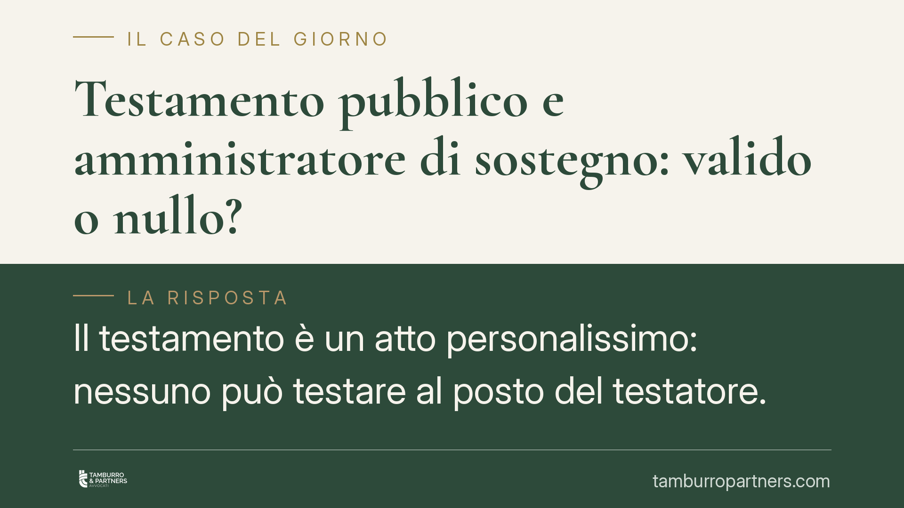

Testamento pubblico e amministratore di sostegno: valido o nullo?
Il testamento è un atto personalissimo: nessuno può testare al posto del testatore. Quando alla redazione del testamento pubblico partecipa l'amministratore di sostegno, si pone il problema della validità dell'atto. Il tema tocca beneficiari, amministratori ed eredi, perché un vizio di forma può travolgere l'intera disposizione. Vediamo la disciplina e le cautele operative.

Il caso
La questione riguarda la sorte di un testamento pubblico ricevuto dal notaio con la partecipazione dell'amministratore di sostegno del beneficiario. L'interrogativo è netto: quell'atto è valido oppure nullo?
Una nota di metodo, doverosa per un contributo a firma dello studio. Circola il riferimento a una pronuncia della Corte di Cassazione (indicata come sent. 2648/2026) sul punto. Gli estremi di tale decisione — numero, Sezione e data — non risultano ad oggi verificabili in modo definitivo, anche in ragione della collocazione temporale. Trattiamo quindi il riferimento con la massima cautela: l'inquadramento che segue si fonda sui principi normativi consolidati, non sull'autorità di una massima non confermata. Prima di ogni utilizzo pratico consigliamo di verificare gli estremi presso le banche dati ufficiali.
Inquadramento normativo
Due sono i pilastri.
Il primo è il carattere personalissimo del testamento. L'art. 631 cod. civ. vieta di rimettere a un terzo la designazione dell'erede o del legatario e la determinazione delle quote o dei beni. In altre parole, la volontà testamentaria deve provenire in modo diretto e non mediato dal testatore. Non è ammesso che un altro soggetto la formi, la integri o la sostituisca.
Il secondo pilastro è il formalismo del testamento pubblico. L'art. 603 cod. civ. disciplina la forma dell'atto: dichiarazione di volontà resa al notaio in presenza dei testimoni, riduzione per iscritto a cura del notaio, lettura e sottoscrizione. La disciplina dei testimoni va letta insieme all'art. 604 cod. civ., che regola i casi particolari — ad esempio il testatore che non sa o non può sottoscrivere — in cui i requisiti formali e la stessa presenza testimoniale assumono un rilievo rafforzato. Queste forme sono imperative: la loro inosservanza determina la nullità dell'atto.
Sul piano soggettivo, occorre distinguere. L'art. 411, comma 4, cod. civ. consente al giudice tutelare di estendere al beneficiario dell'amministrazione di sostegno determinati effetti, limitazioni o decadenze previsti per l'interdetto o l'inabilitato, ma con provvedimento espresso. La capacità di testare, tuttavia, appartiene al testatore in quanto tale e non può essere esercitata per il tramite dell'amministratore.
Perché il testamento è nullo
Il punto è la confusione tra due piani distinti.
L'amministratore di sostegno assiste o rappresenta il beneficiario per gli atti di natura patrimoniale e gestionale indicati nel decreto di nomina. Il testamento non rientra in questa area: è atto personalissimo, dunque non delegabile e non sostituibile.
Quando l'amministratore partecipa alla formazione della volontà testamentaria — esprimendola, integrandola o comunque intervenendo nel contenuto — l'atto viola l'art. 631 cod. civ. e le forme imperative dell'art. 603 cod. civ. Il vizio è di forma-sostanza e non è sanabile: nemmeno un'eventuale autorizzazione del giudice tutelare può renderlo valido, perché quell'autorizzazione non attiene a un potere che l'ordinamento riconosce in materia testamentaria.
Cosa cambia in concreto
Per il beneficiario dell'amministrazione di sostegno. La nomina dell'amministratore non lo priva, di per sé, della capacità di testare. Può disporre delle proprie sostanze per il tempo in cui non avrà più vita, purché la volontà sia sua e l'atto rispetti le forme di legge. L'amministratore non deve intervenire nella dichiarazione testamentaria.
Per l'amministratore di sostegno. È bene non partecipare alla redazione del testamento del beneficiario né influire sul suo contenuto. Il ruolo di sostegno riguarda la sfera patrimoniale e gestionale, non l'atto di ultima volontà.
Per gli eredi e i legatari. Un testamento pubblico formato con l'intervento dell'amministratore è esposto a impugnazione per nullità. Chi vanta aspettative sulla base di quell'atto deve considerare la fragilità della disposizione e valutare per tempo la propria posizione.
Cosa fare in concreto
- Separate i ruoli. Tenete distinta l'attività dell'amministratore di sostegno dalla formazione della volontà testamentaria: il testamento è atto personale del testatore.
- Verificate la capacità, non la rappresentanza. Se vi sono dubbi sulla lucidità del testatore, accertate la capacità di intendere e volere al momento dell'atto; non ricorrete alla rappresentanza dell'amministratore.
- Controllate il decreto di nomina. Leggete i poteri conferiti dal giudice tutelare: non includono la redazione del testamento.
- Rivolgetevi al notaio in via preventiva. Impostate correttamente forma e testimoni ai sensi degli artt. 603 e 604 cod. civ., valutando i casi particolari (testatore che non sa o non può firmare).
- Se avete già un atto a rischio, fatelo esaminare per valutare vizi di nullità e possibili rimedi prima che maturino contenziosi.
---
*Contributo informativo a cura di Tamburro & Partners - Avv. Giuseppe Tamburro. Non costituisce parere legale.*
Ogni famiglia ha il suo equilibrio.
Separazione, divorzio, affidamento, assegno: se vuoi un confronto riservato su una specifica situazione, scrivi allo studio. Ti rispondiamo entro un giorno lavorativo.